HB-F500の秘密
HB-F500はスロット構成が異なるバージョンが存在するとの噂あり。
HB-F500はそのスロット構成の特殊さから動かないゲームが存在すると言われています。
アスキャットさんのMSXテクニカルガイドブックでも以下の様に解説されています。
「ディスク内蔵機などで、ＲＯＭカートリッジが暴走する現象が知られています。これは、主に内蔵のディスクインターフェイスがスロット０の拡張スロットに置かれているＹＩＳ−８０５や、ＨＢ−Ｆ５００で起こります。」
「ＤＯＳのインタースロットコールルーチンに異常があるのが主な原因です。異常を起こす機種は、ソニーＨＢ−Ｆ５００、ヤマハＹＩＳ−８０５などの、ページ０のＲＡＭがスロット０の拡張スロットにある機種です。」
「ヤマハＹＩＳ−８０５，ビクターＨＣ−９０，ＨＣ−９５，ソニーＨＢ−Ｆ５００の製造番号５５００以下の機種で暴走する。サブＲＯＭの切り替えがうまくいっていない、タイマ割り込みルーチンをページ０に置いている。」
動かないゲームについての情報はというと、インターネットで調べてみても「BURAIが動作保証対象外」とか「琥珀色の遺言のエンディングが動かない」と書かれている程度でいまいちよく分かりませんでした。実際にBURAI上巻のオープニングだけは確認しましたが、問題なく動作していました。ちなみにBURAI上巻は漢字ROMの検索もFM MUSICの検索もしていないようで、漢字ROMが無いと豆腐が表示され、FM MUSICが無いと音が鳴りませんが動き続けます。私のHB-F500は「LAYDOCK2の秘密」で書いたようにFM MUSIC相当のFM音源が取り付けられていますが、FM MUSICのROMが（検索用文字列すら）無くても音が鳴りました。
それはさておき、私にとって一番の問題は「ディスクインターフェイスがスロット０の拡張スロットに置かれている」と言うことです。これが何を意味するかというと、一番若いスロットにあるディスクインターフェースがドライブＡに割り当てられるため、似非RAMディスク等を挿しても、内蔵のフロッピーディスクドライブがドライブＡになってしまうということです。
ところがインターネットで検索してみるとブログにHB-F500のスロット構成を書いている方がいて、その方のHB-F500ではスロット#3-1にディスクインターフェイスがあるようでした。上記MSXテクニカルガイドブックでも「製造番号５５００以下の機種で暴走する」と書かれていますので、やはりスロット構成は少なくとも2種類存在しているようです。HB-F500ではS3527というYAMAHAのカスタムチップが使われており、その仕様書を見るとスロット#0を拡張する構成とスロット#3を拡張する構成の2通りの構成方法があるようです。
これが元々のHB-F500（前期版）のスロット構成。
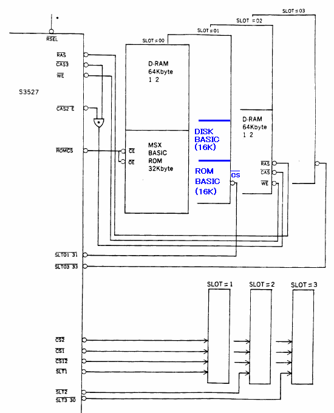
こちらが恐らく後期のHB-F500のスロット構成。
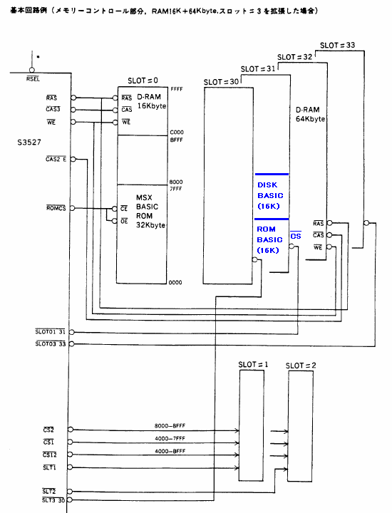
設定方法は以下の様になっているようです。
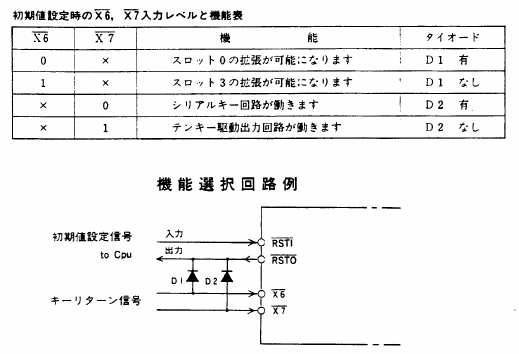
要するに起動時に/X6が/RSTOに引かれてLowになるとスロット#0拡張、/RSTOと切り離されているとHighのままでスロット#3が拡張されることになります。
実際の回路を追ってみるとこんな感じでした。つまり、IC39の4ピンをカットしてしまえば/X6とつながらず、スロット#3を拡張する構成になるはずです。
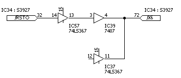
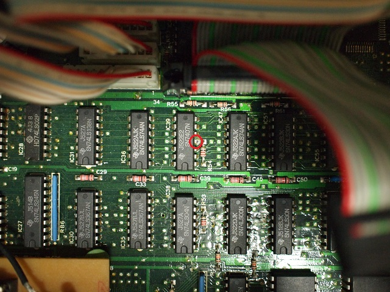
ただし、上記スロット#3を拡張する場合の図ではスロット#0にメモリが16kB存在しています。また、メモリへの/CAS信号もスロット#0を拡張する場合とスロット#3を拡張する場合で若干異なっています。インターネットの情報では後期版の構成でスロット#0にメモリは存在しないようですので、とりあえずは無くても良さそうです。実際の回路を追ってみるとこんな感じでした。つまり、IC21の10ピンにつながっている信号をカットし、9ピンと同じ信号を入れれば良い感じです。
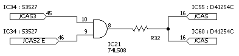
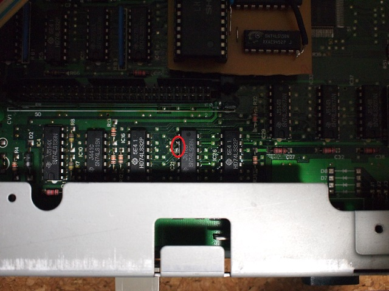
一応、これで起動することと似非RAMディスクがドライブＡに割り当てられることは確認できました。BURAIのープニングも見られました。
にがさん経由で入手した、"SLOT.BAS"（MSX・FAN 1994年12月号「おもちゃのマシン語」に収録されていたもの）でスロット構成を表示した結果がこちら。
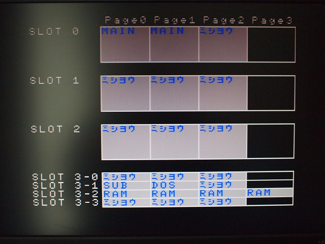
謎のスイッチについて
私が中古で購入したHB-F500には背面に謎のスイッチが付いていました。赤マジックで「内」と「外」と書かれていたように見えます。スイッチの取り付け穴がやけに綺麗なので、個人の改造では無い・・・？しかし他の中古とかを見ても同じスイッチが付いている物は無く・・・。
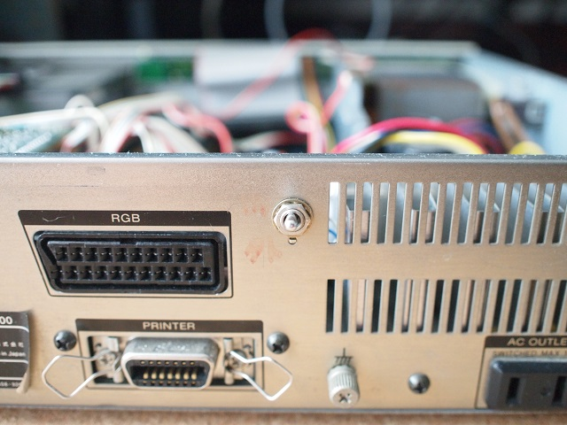
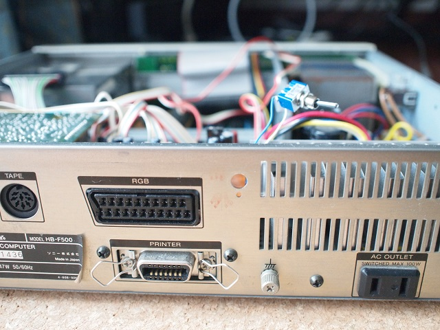
回路を追ってみるとこんな感じでした
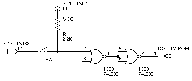
要するに漢字ROMの20ピン(/CS)をいじっているようです。スイッチが「内」の時にはつながり、「外」の時は切り離されます。HB-F500の内蔵は第二水準がないので、外部を使いたかったのかも知れません。漢字ROMはI/Oアクセスなので何の仕組みも無ければMSX-JEのカートリッジを挿すと競合します。そのため、普通は起動時には内蔵の漢字ROMをDisableにし、スロットに漢字ROMが無ければEnableにするという動作をしているはずです。わざわざ物理的に切り離すスイッチをつけたと言うことはバグがあるのかも知れません、と思っていたら本当にバグがありました。内蔵漢字ROMをDisableにする機能（IOポートのF5h）が実装されていませんでした。常にEnableになっているようです。出荷時期によってはサポートされているのかも知れません。教えてくださったにがさんに感謝！
頂いた情報によると、前期版スロット構成で動かないソフト（Topple Zipらしい）があり、修理に出したところ「スロット構成の変更」と「漢字ROM切り離しスイッチの追加」の両方がされて戻ってきたという事例があるようです。
お約束ですが、この噂を見て改造などを行い故障やその他問題が発生しても責任は負えません。各自の責任において情報を広く集めて行うことをおすすめします。